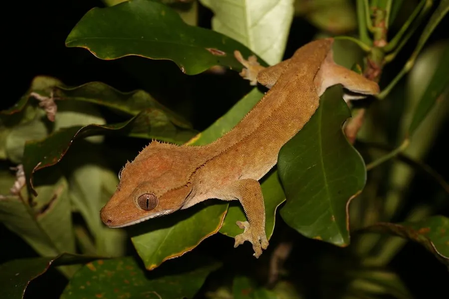

爬行动物 · 动物界
睫角守宫 Correlophus ciliatus

新喀里多尼亚特有的树栖守宫，眼睛上方有睫毛状突起，能断尾再生，因宠物贸易而受到关注，是人工繁殖的热门守宫。
- 分类
- 门脊索动物门纲爬行纲目有鳞目科双趾虎科属睫角守宫属
- 栖息环境
- 新喀里多尼亚的岛屿森林、树冠层与灌丛
- 地理分布
- 新喀里多尼亚的岛屿
- 保护级别
- IUCN 易危（VU）；非中国原产，在中国无保护级别
物种志
睫角守宫体长 15–20 厘米，其中尾部约占一半，头部较大，眼睛上方有一排细长的鳞片突起，形似睫毛，“睫角”之名由此而来；体色变化丰富，从灰褐、黄褐到橙红都有，背部常有浅色花纹，趾端有吸盘，善于攀爬。
它仅分布于新喀里多尼亚的岛屿森林中，栖息于树冠层，夜行性，捕食昆虫，也吃水果和花蜜。它每次产卵 2 枚，一年可产多窝，孵化期约 60–90 天。睫角守宫受到惊吓时可断尾逃生，断掉的尾巴不会再长回原来的模样。它因外形可爱、饲养容易而成为宠物贸易的热门物种，野生种群因栖息地破坏和捕捉而下降，被列为易危物种；它在中国属于外来物种，饲养者不可随意放生野生个体。
形态与习性
- 食性昆虫、水果和花蜜
- 体长15–20 cm（含尾）
- 体重约 30–50 g
- 繁殖每次 2 枚，一年可产多窝，孵化 60–90 天
- 活动节律夜行性，树栖
趣味知识
- 睫角守宫眼睛上方的鳞片突起像睫毛，是它最可爱的特征。
- 它受惊时能断尾逃生，但断掉的尾巴不会再长得和原来一样。
- 睫角守宫是人工繁殖最成功的守宫之一，已培育出多种色型。